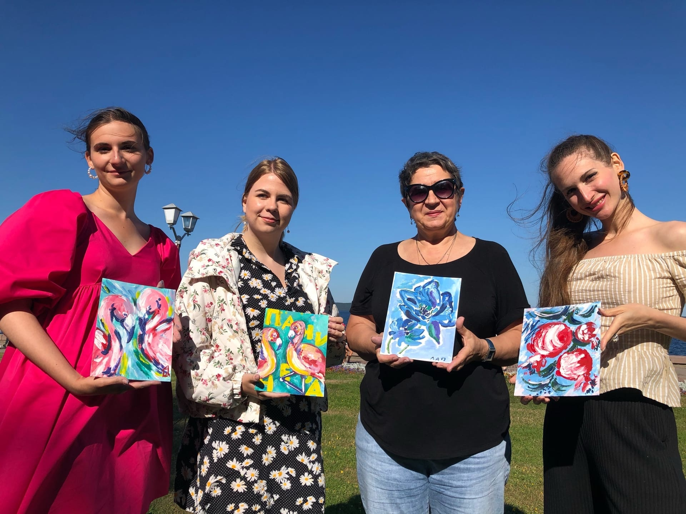
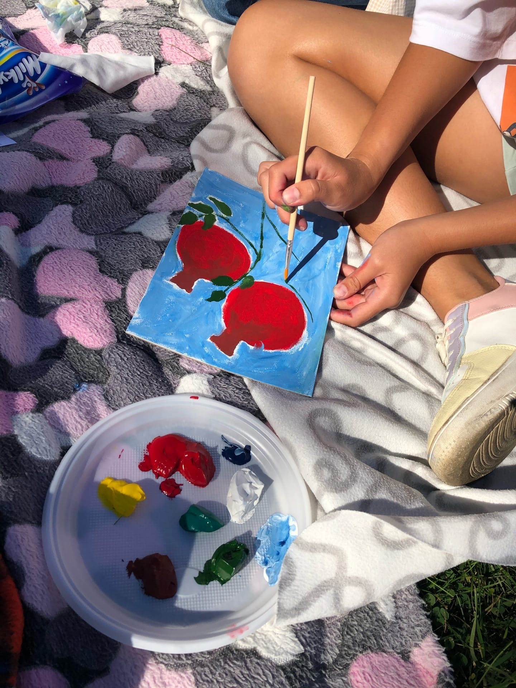
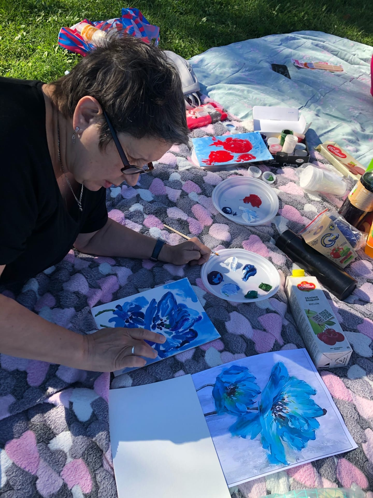

14 числа я провела уютный мастер класс-пикник по рисованию на берегу Онежского озера. И для мастер класса, я решила выбрать не совсем обычную технику, мы рисовали руками.
Такой способ творить, очень раскрепощает и позволяет переступить через свои внутренние границы. А ещё это освобождает нашего внутреннего ребёнка и позволяет нам творить шире.
  Спасибо всем, кто поддержал мою инициативу и провёл это прекрасное время вместе со мной.
Благодарю от всей души🤍